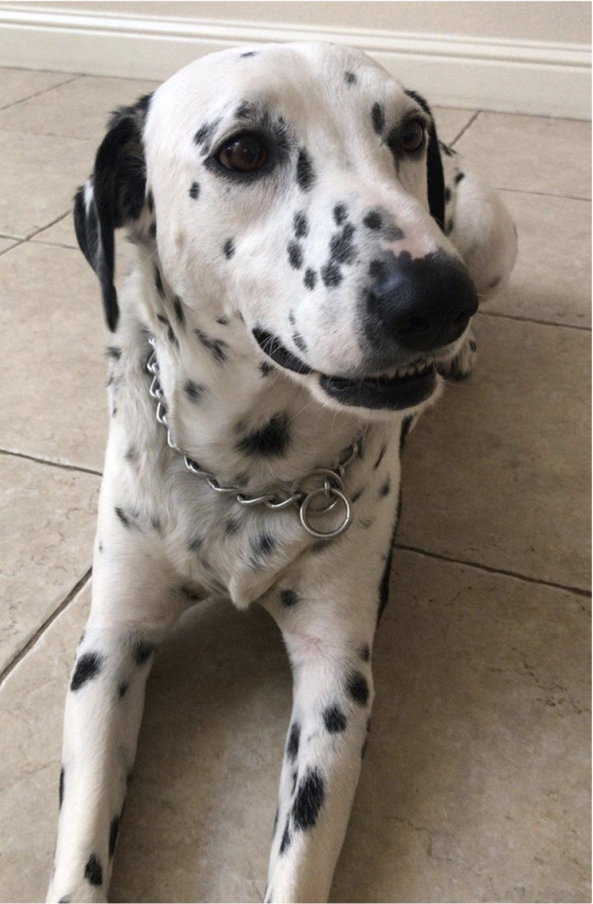
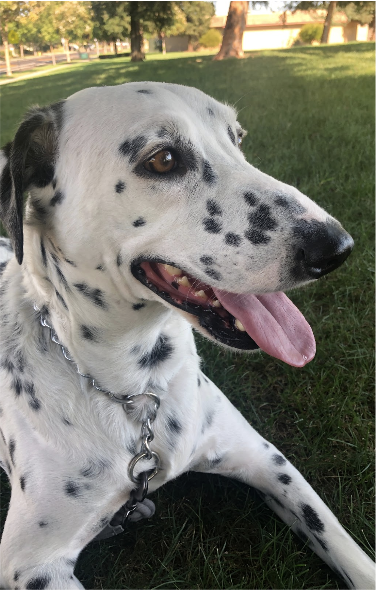

Gustav
Our Gentle Giant
 
Sex: Male
Weight: 65 pounds
Breed: Dalmatian
Guardian Info:
Josh Terrill - 111-222-3333
Haley McMurphy - 111-222-3333
ABOUT
Gustav (or "Goose" for short) is our 4-year old Dalmatian. We have had him for 2-years where he has lived with Josh and another family pet. He is neutered, housebroken, kennel trained, and is accustomed to living indoors. He is a very gentle, low-energy, "chill" dog who enjoys going on long walks and hikes just as much as lying at our feet while listening to music.
HEALTH & GROOMING
As mentioned above, Gustav is neutered and up-to-date on all vaccines. His veterinary doctor is Dr. Sudha Kakarla at Sylvan Veterinary Hospital in Modesto, CA. He goes in for regular check-ups twice a year. We feed Gustav twice a day, once in the morning around 8:30-9am, and once in the evening around 6pm and then he is taken on a walk between one and three miles long, and is bathed once a month. If neither of us are home, usually he will go into his kennel. If we will be gone for a considerable amount of time, we will take him to our family’s house for the duration of our absence.
TRAINING
Gustav is trained to let us know when he needs to go to the bathroom by standing next to the door and laying down, we always carry pick-up bags when we take him outside. He also kennel trained for when we are out of the house and he will be alone for a period of time.
ABOUT GUARDIANS
Josh is a software engineer that works remotely for a company called Axiallon Software. Haley works locally as a fashion designer and product developer for Stitch Fix. They enjoy listening to records, going to concerts, eating great food, and hanging out with Gustav.